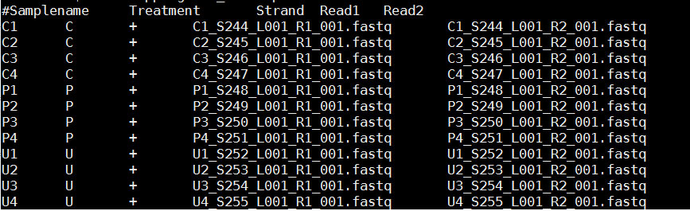
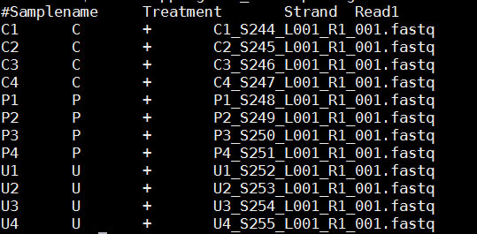
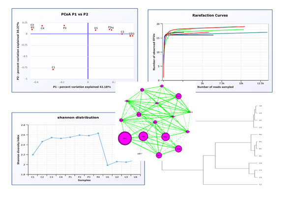
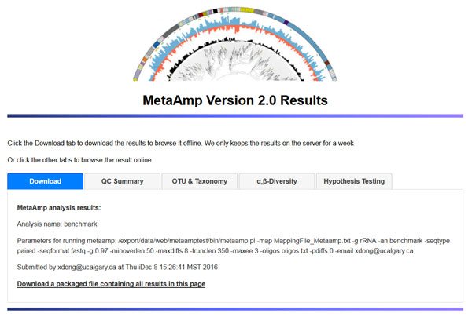
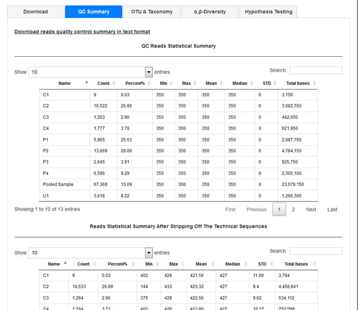
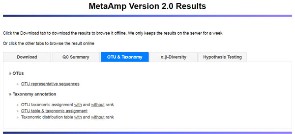
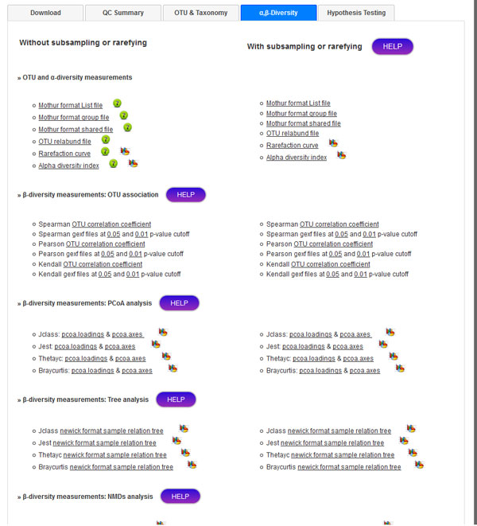
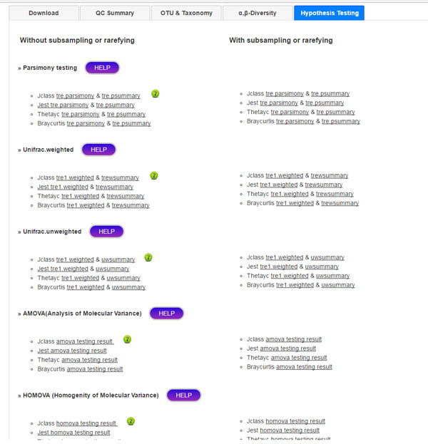

MetaAmp can take single-read or paired-end 16s/18s rRNA sequencing in fasta or fastq format. When the input sequence files are in fasta format, providing corresponding quality files will help to get a better analysis results although you can still conduct the analysis without quality files
Mock community testing data set is available at: download page.
MetaAmp source code can be download from download page for local installation to run as web service or command line on linux platform.
MetaAmp are using a few third party software and database for quality control, producing diversity index, and taxonomic assignment.The database and software versions used for the current verion of MetaAmp are listed as below:
- Mothur version: 1.39.5;
- Usearch version: 9.0.2132;
- SILVA databse version: v132
We are keeping updating metaamp to keep up with the latest methods and user request. Please check the MetaAmp Update Page for the new features
"oligos.txt" and "design.txt" file names are reserved by the program and please avoid naming your sequence and mapping files with the same names.
Analysis Name:
The analysis name is a required field and only takes
letters, numeric digits, underscores. No spaces are allowed in the analysis name.
Email address
The email address is a required field. MetaAmp uses the email address to notify user the occuring errors during the analysis and to send the result link to user after the analysis finishes. Please provide a valid email address.
Sequence format
MetaAmp can take either
fasta or fastq format sequence files as inputs for the analysis
Sequencing type
The amplicon sequences can be
single-read or paired-end sequencing
Upload archived sequence file (demultiplexed):
The archive contains the demultiplexed and uncompressed fastq or fasta format sequence files.
- When the sequences are in "fastq" format, the file name extension must be ".fastq".
- The interleaved fastq format files for paired-end sequencing are not supported. The paired-end read1 and read2 files must be in the seperated files.
- When the sequences are in "fasta" format, the file name extensions must be ".fna" or ".fasta" for sequence files and ".qual" for quality files.
- Providing quality files for the fasta format sequences will help to get better analysis results. When the quality files are supplied, the pairs of the fasta and quality files indicated by two file names differing only in their extensions.
- The compressed archived file can speed up the file uploading. The archive formats below are supported:
- zip: Zip compressed file (.zip, .jar or .par)
- tgz: Gzip compressed tar file (.tgz or .tar.gz)
- tar: Standard tar file (.tar)
- tbz: Bzip2 compressed tar file (.tbz or .tar.bz2)
- txz: Xz compressed tar file (.txz or .tar.xz)
- gz: Gzip compressed file (.gz)
- Z: Lempel-Ziv compressed file (.Z)
- bz2: Bzip2 compressed file (.bz2)
- xz: Xz compressed file (.xz)
- lzma: Lzma compressed file (.lzma)
Upload mapping file:
- The mapping file is a space-delimlited text file (do not use word to produce the mapping file) and has four columns for the single-end sequencing and five columns for the paired-end sequencing.In the mapping file:
- The columns in the mapping file are space separated.
- The sample name must be unique and can only contain characters, numbers and underscore [a-zA-z0-9_]. No spaces and no hyphens are allowed in the sample name and also a smaple name cannot start with nubmers.
- The Strand column accepts "+|-" signs. It's orientation of the amplicon sequence in read 1 file.
- It's having 4 columns for single end sequencing and 5 columns for the paired end sequencing
- Each or each pair of the sequencing files can only belong to one sample
- Please group your samples by treatments ( for example control vs. disease, time_0 vs. time_1week). This is very important for the hypothesis test. From time to time, I have seen users just copied sample name column to the treatment column. The MetaAmp will still run but the statistical testing result will not make sense at all.
- A paired-end sequencing mapping file example is as following. In the mapping file, the first line is the header line is optional. It must start with the sharp chararter "#".

- A single-end sequencing mapping file is as following. It is very similar to the paired-end mapping file but it only has four columns.

Forward and reverse primers:
- The primers are the amplicon primers (not adapter, sequencing primer) and the orientations are from 5' to 3'
- The forward and reverse primers can also be degenerate using standard IUPAC nomenclature.
- Primers can be upper or lower case letters.
- multiple forward/reverse primers must be entered in the separate lines in the box.
- For the paired-end sequencing, the forward primers are the primers you used to generated your R1 read, the reverse primers are the primers you used to generate R2 reads.
- For the single-read sequencing, the forward primers are best thought of as the forward sequencing primer. So if you are using the 16S rRNA primers 27f and 338r to generate sequencing substrate, but you are sequencing off of the 338r end of the fragment, you would list 338r as the forward primer and 27f as the reverse. If your target region is longer than the length which your sequencing platform can generate, you should leave the reverse primer box as empty, in this way, you are telling the program to only screen the primer at the front.
Marker Gene Type:
MetaAmp can analyze both ssu rRNA genes and the other taxonomic marker genes. However, the taxonomic profile will only be provided for the ssu rRNA gene analysis but not other genes.
- rRNA Gene: the input sequences are the ssu rRNA genes
- non-rRNA gene: the input sequences are not ssu rRNA genes
Similarity cutoff:
This is the OTU clustering threshold. 0.97 mean 97% identity. This is default cutoff and usually it works great.
Paired-end sequencing merging options
For the paired-end sequencing analysis, paired-end read pair will be merged before doing analysis.
- Minimum length of the overlap: it defines that the read pairs whose overlaps are shorter than this option will fail to align. The default value for this option is 50
- Maximum mismatches in the overlap region: it defines the number of the mismatches are allowed in the overlap region during merging. The read pairs whose mismatch number are bigger than this option will fail to align. The default value for this option is 0.
Quality filtering options:
MetaAmp defines the quality control threshold through the following fields:
- Maximum number of differences to the primer sequence: this parameters is used to allow differences in the primer. The default value is 0.
- Maximum number of expected errors: default value is 1.0. It indicates that on average 1 nucleotides were incorrectly assigned in every sequence. Please visit maxee link to see how to configure this option
- Trim amplicon to a fixed length: for the single-read sequencing, trimming the quality controlled reads to a fixed position is critically important for achieving the best results because the clustering algorithm considers all gaps to be differences, including terminal gaps. The length should be propotional to your sequencing target region length (the region length between your forward and reverse primer)
Tips for big dataset analysis:
The big dataset takes longer time to upload and process. The best way for it is to randomly select a few samples from your whole dataset and run through the pipeline. The pipeline may only take a few minutes to finish for smaller dataset. Then you take a look at the "QC summary" in the result page to see whehter the paramters used in your analysis is optimized or not. You may twist the paramters and run the dataset several times util you are satisfied with your results and then upload the whole dataset.
Example output pages:
- Visualization examples:

- Analysis result download page:

- Quality control summary page

- OTU page:

- alpha and beta diversity page:

- Hypothesis testing page:
